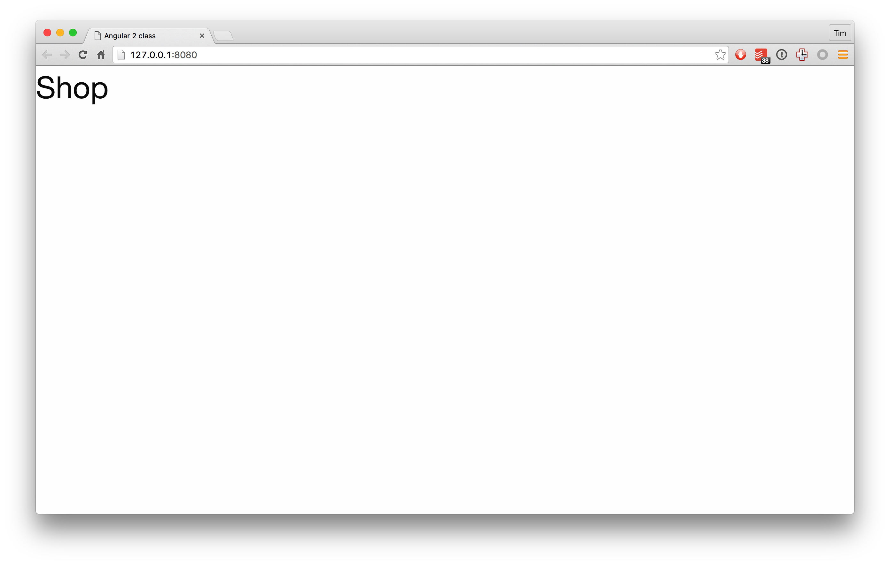

Write code in ./app.
Run npm start to:
/app on changeThe below is intended to be a chance to use what you've learned, not a puzzle. If it's not clear what to do, ask me!
App class in app/App.component.ts@Component decorator to ensure Angular knows it's a component<app></app> tagstemplate: which displays <h1>Superhero shop</h1>app/main.ts - this will be responsible for starting the appbootstrap method - it's in angular2/platform-browser-dynamicApp componentbootstrap with App to boot up the application<app> tag, it should have your HTML